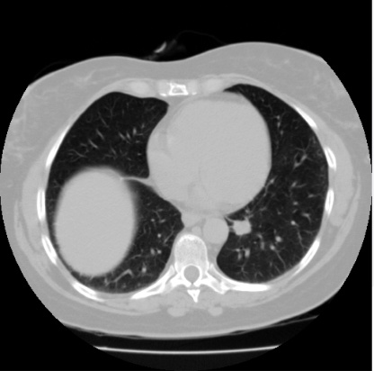

Thank you for taking the time to speak with me! I created this website as a quick and easy way to access the projects and documents I would like to discuss during our first interview.
VIEW MY WORK ↓
Below I have attached two documents. The first is a presentation I recently gave to my coworkers during our monthly progress check to discuss the dataset I am currently working with. The second is a quick example of the Python code I used for this project.
Our school primarily uses R when it comes to cleaning and analyzing large datasets. I recently taught myself how to use SQL and created this guide for my professor before I transitioned to another position. I sent it to her in hopes of showing both her and anyone else working on the project what SQL can be used for.
This was my final presentation for my Optimization course. I was responsible for all of the coding and data visualizations for the project.
This was a project I completed with a student pursuing her Master's degree in Environmental Science. I was responsible for much of the statistical modeling and all of the data visualizations for the project.
Thank you for your time and consideration. I would be incredibly excited for the opportunity to contribute to the Launch Supply Chain team at Cape Canaveral.
Brieleigh Wescott
Python
R
SQL
Java
BigQuery
Excel
Data Cleaning
Statistical Modeling
Predictive Modeling
Optimization
Data Visualization
Feature Extraction
Data Pipelines
Analytical Reporting